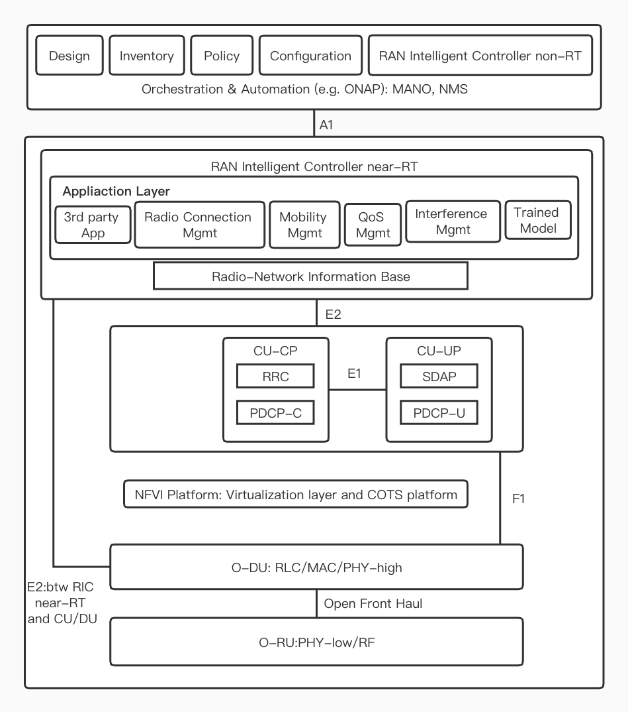

A Survey of the Future of RAN -- ORAN
Zishuai Liu, l.zishuai@wustl.edu
(A project report written under the guidance of Prof. Raj Jain)
Abstract
Radio Access Network is the bond connect user devices to the core network. Along with the development of 5G, the key part to apply it to real life is to improve RAN. ORAN is one that designed for operators to establish their own software-based network architecture and apply the ML and AI approaches on it. The article will also mention the disadvantages and challenges of ORAN, which organizations still work on.
Keywords
RAN, ORAN, 5G, O-Cloud
Table of Contents
1 Introduction
Open-Radio Access Network, referred to as ORAN, is one of the more recognized wireless access solutions that can achieve the popularization of 5G in the industry. The essence concept is a key part of using software to enable access to 5G and future wireless networks. ORAN is the most potential future of RAN but still remains open problems to be resolved.
2 RAN
2.1 Introduction to RAN
Radio Access Network(RAN), serves as the major element of the wireless communication system. It connects the user devices, such as laptops, cellphones, to the core network through a radio link as shown in figure 1. The link goes to the core network, which manages user information such as the location. Basic RAN architecture is shown by figure1. RAN contains three key parts: antennas, radios, and baseband units.
Figure 1: RAN
2.2 RAN elements
Antennas: Convert electronic signals to radio waves.
Radios: Switch the digital information to radio signals in order to send wirelessly. Besides, it can also ensure the appropriate frequency bands of transmissions with proper power levels.
Baseband units: Classical baseband usually uses licensed radio spectrum and realizes wireless communication through the combination of electronic devices and programs. Baseband units make the wireless communication possible by providing signal processing. They can detect the mistakes, protect radio signals and confirm the most usage of radio resources.
2.3 Evolution of RAN
Terminal devices, such as mobile phones, computers and smart terminals, are usually connected through the network in two ways: One is called "wired" : network cable, optical fiber, cable line. The other is called "wireless" : such as WiFi, WiMax, Bluetooth, ZigBee, satellite communication, and 2G, 3G, 4G, 5G, which we are more familiar with. In a broad sense, a network consisting of devices connected to a wireless terminal through a wireless way is called a RAN. The role of RAN is to connect all wireless devices to the communication network. In the earliest RAN, the BBU, RRU and supporting power supply equipment were all integrated by the equipment manufacturer through dedicated hardware and software. The integrated device is called a "black box," meaning it is a closed, invisible system. It does what it's supposed to do, but nobody knows its inner workings and how it works except the maker. It is worth mentioning that as early as 2009, China Mobile had led the launch of C-RAN, and some other operators jointly established the C-RAN alliance. After that, in 2018, the C-RAN Alliance merged with the xRAN Forum led by AT&T, an American carrier, to form the O-RAN Alliance. China Mobile, China Telecom, AT&T, Deutsche Telekom, NTTDOCOMO of Japan, SKT and KT of South Korea and many other countries and regions are members of the alliance.[1]
In addition to the O-RAN Alliance, other organizations are also promoting the development of O-RAN technology, with the TIP project being the most influential. TIP is an open source telecommunication infrastructure project initiated by Facebook, Google and Nokia together with some telecommunication operators in 2016 to jointly develop open, open source and shared telecommunication networks, including the wireless access Technology project team named "OpenRAN".
All these organizations share the same goal -- to achieve mature commercial use of O-RAN technology. They follow a similar method, with a slightly different emphasis: TIP's OpenRAN is focused on device development; The O-RAN alliance focuses on work architecture and business requirements and is on the application side. The two organizations have entered into a partnership in 2019 to ensure that they reduce R&D costs by sharing resources, maintaining consistent research directions and avoiding duplicating research as they develop 5G RAN solutions. The O-RAN is applied for 5G shown as figure 2.
Figure 2: ORAN in relation to 5G
2.4 Challenges and problems
Wireless network construction has always been the most important part of the operator network comprehensive cost (TCO), roughly accounting for 60%~70%. As soon as most operators experience huge investment in 4G network, they will face the pressure of investment and construction of 5G network. 5G network is different from 4G network. It has fast speed, large bandwidth and high frequency band, which means that the penetration of 5G network will be far worse than that of 4G network. To put it in plain English, it used to be that 4G networks only needed one base station to cover an area, while 5G networks needed five. That would require millions or even tens of millions of small 5G base stations. At the same time, 5G network is a network that operators must invest in, and large-scale network construction is bound to bring huge costs.
At this time, new technologies and new schemes need to be introduced to reduce construction difficulties and wireless network investment through scheme innovation.[2] Against the background of slowing growth of "wireless Internet" traffic revenue and declining voice revenue, vertical industries are the "blue ocean market" that operators must enter, and expanding operators' profitability will be the top priority of 5G network. New services in vertical industries mean more diverse business types, more complex network management, more efficient resource management solutions, and more flexible network architectures to facilitate business innovation.[3] In this context, the operator-led O-RAN industry Alliance emerged, putting forward two core visions of "open" and "intelligent".
3 Why O-RAN
Open-Radio Access Network, referred to as ORAN, is one of the more recognized wireless access solutions that can achieve the popularization of 5G in the industry. The essence concept is a key part of using software to enable access to 5G and future wireless networks.
3.1 O-RAN concept
O-RAN provides open interfaces, software and hardware for operators and is improved by introducing deep learning to its architecture. The mission of Open Radio Access Network is to build an open, virtualized and intelligent RAN architecture,creating a competitive ecosystem of multiple vendors whose products interoperate with each other.[4] The O-RAN Alliance is a global community whose members will work together to develop a unified roadmap for future O-RAN standards and specifications, reference architectures, and interfaces between the various components of the network.
Around this new technology concept, 27 global MNO and more than 180 ecosystem contributors formed the O-RAN Alliance to develop specifications, reference architectures, and an organization that defines the interfaces between the various sub-components of O-RAN. The core principles of the O-RAN Alliance are openness, intelligence, virtualization and interoperability. The overall architecture of the O-RAN is shown as figure 3.

Figure 3: Key features and functional models of the O-RAN architecture
3.2 O-RAN features
Openness: open interfaces, open software and hardware sources
Intelligence: introduce deep learning methods to every layer of RAN architecture[3]
The core of O-RAN: Standardization and open source. The ORAN alliance is led and initiated by operators and has three key principles: the first principle guides the evolution direction of the industry. The first principle is open interface, which can support the interoperation of devices from different manufacturers. The second is to build a wireless access network through virtualization to realize an intelligent wireless network based on big data. The second principle is to actively and fully utilize common platforms and reduce dependence on proprietary platforms.[4] The third principle is to develop and promote standardized definitions of interfaces and related apis, and explore open source solutions.[5]To put these three rules in plain English, O-RAN is pushing in four directions: smart networks, open interfaces, universal hardware, and open software. What used to be a black box of hardware is now a generic standardized product, and the software code in it is open source.
3.3 Security
Security work in process which can provides 5G service operators enough confidence in developing and deploying. In the O-RAN system, O-RU is independent from O-DU and becomes a network element that can be directly controlled by the network management system. In other words, O-RU needs to provide external visible IP address. Therefore, higher requirements are put forward for the security of O-RU in O-RAN. The connections of all transport layer protocols on plane M must be secure and controlled using SSH V2 (mandatory) or TLS1.2 (optional).[6]
4. O-Cloud
O-Cloud is a cloud computing platform. The underlying layer is composed of three parts: physical infrastructure nodes (such as general purpose computers or dedicated hardware platforms) that meet O-RAN requirements, cloud platform software, and O-RAN related management and orchestration functions. The architecture of O-Cloud is shown as figure 4.[7]
Figure 4: O-Cloud
4.1 Proprietary software and hardware platforms
Here refers to the traditional wireless access network RAN original proprietary hardware and proprietary software platform. Even in O-RAN, it is difficult to generalize all hardware and software in a short time. Some functions, such as RF processing and the newly added real-time baseband processing, will also run on the proprietary software and hardware platform RU.But part of the "virtualization" of embedded software based on proprietary hardware and Linux operating systems is already happening. RU virtualization is one of the future research directions.
4.2 Universal software and hardware platform
General-purpose hardware mainly refers to general-purpose computer hardware based on X86, and general-purpose software mainly refers to general-purpose operating systems such as Linux.An important goal of O-RAN is to move the functionality of the existing RAN from proprietary hardware and proprietary embedded operating system platform to common hardware, common operating system, common cloud platform as much as possible, and try to open software interfaces, and even open source software.[13][14]
4.3 Common cloud platform components
The VM operating system, VM monitor, and container are included.
4.4 O-RAN related management and choreography functions
Firstly, O-RAN network node management: Provides functions such as O-RAN infrastructure node discovery, registration, software lifecycle management, workload lifecycle management, fault management, performance management and configuration management. Secondly, Hardware Accelerator Management. Thirdly, O-RAN cloud architecture deployment.
4.5 Software entities
The Software entities host and run O-RAN network functions.
5. Disadvantages of O-RAN
As with all disruptive innovations, O-RAN still has a number of flaws, but three problems stand out.
5.1 Insufficient performance
At the hardware level, O-RAN technology replaces specialized chips with general-purpose chips.
The original dedicated chip because of the use of deeply customized software, so the signal transmission rate, delay avoidance and anti-jitter processing performance is stronger, and lower energy consumption. In contrast, the universal chip scheme is flexible, but it has low performance, low efficiency and high power consumption. In this way, the O-RAN device must first address the basic performance standards.[8]
5.2 Insufficient reliability
To meet basic performance metrics, O-RAN's solution had to increase equipment redundancy. In addition, allowing hardware and software from different vendors to interconnect with each other may cause compatibility problems. As a result, the overall system reliability faces greater challenges.
5.3 Complex operation and maintenance
The adoption of O-RAN technology will increase the number of equipment suppliers, which will make the mobile network in the later maintenance and operation, facing the problem of collaboration and responsibility division between different manufacturers. A lot of coordination work will affect the installation period of equipment and increase the cost.
6. Security issues of O-RAN
It is not difficult to see from the architecture that in order to achieve openness and intelligence, the Open RAN architecture is more complex, which may increase the following security risks.[9]
6.1 Security risks of open forward interface
In traditional RAN deployment, DU and RU come from the same manufacturer, and the forward interface between DU and RU is implemented by a single manufacturer. While O-RAN uses the 7-2x open prepass interface, O-DU and O-RU can be sourced from different manufacturers. When O-DU and O-RU are from different manufacturers, it means that O-DU cannot fully control O-RU and needs to be managed by the higher layer of service management and orcheographer.[12] This may bring the risk of man-in-the middle attack to the northbound system on O-DU through the forward interface.
6.2 Near-Real-Time RIC security risk
Through the introduction of Non-Real-Time RIC and Near-Real-Time RIC, O-RAN combined forces can actively optimize and adjust network load balancing, mobility management, multi-connection control, QoS management, network energy saving and other functions based on AI, and finally realize network intelligence and automation.[10]
However, for such an architecture, the Near-Real-Time RIC in O-RAN has potential security vulnerabilities, including the conflict between Near-Real-Time RIC and gNodeB, xAPPs conflict, xAPP trust root, UE identity in RIC and other problems.
6.3 Near-Real-Time conflict between RIC and gNodeB
Based on the O-RAN architecture, the Near-Real-Time RIC serves as a logical entity, or software platform consisting of multiple xAPPs, that is deployed over the gNodeB(CU-CP, CU-UP, and/or DU). Near-Real-Time RIC can exchange data between xAPPs and gNodeB through the E2 interface, so that each xAPP can control one or more RRM(Wireless resource management) functions. To be more specific, the Near-Real-Time RIC can control mobility and load balancing by exchanging data between a particular xAPP and CU-CP via the E2 interface.
However, the problem is that Near-Real-Time RIC controls the RRM function and gNodeB performs the RRM function. There is no clear functional demarcations between the two. This may result in decision conflicts between the providers of Near-Real-Time RIC and gNodeB, which may lead to network instability.For example, an attacker can use malicious xAPP to deliberately trigger RRM decisions that conflict with gNodeB, resulting in service denial.[11]
Summary
The “open” and “intelligent” are the core of the ORAN. Since ORAN has improved the features of RAN and extends the methods to software-based to break the barrier for operators, there are still many facets to be enhanced and open problems to be resolved. However, world-wide organizations focus on these challenges and some work out some resolutions, some are still on their way.[15]
References
[1]S. Kumar Singh, R. Singh, B. Kumbhani, “The Evolution of Radio Access Network Towards Open-RAN: Challenges and Opportunities,” 2020 IEEE Wireless Communications and Networking Conference Workshops(WCNCW).
https://ieeexplore.ieee.org/document/9124820
[2]M. Mohsin, J. M. Batalla, E. Pallis, G. Mastorakis, E. K. Markakis, and C. X. Mavromoustakis, “On Analyzing Beamforming Implementation in O-RAN 5G,” Electronics, vol. 10, no. 17, 2021.
https://www.mdpi.com/2079-9292/10/17/2162
[3]S. Niknam, et al., “Intelligent O-RAN for Beyond 5G and 6G wireless networks,” arXiv:2005.08374.
https://arxiv.org/abs/2005.08374?context=eess.SP
[4]A. Arnaz, J. Lipman, M. Abolhasan, and M. Hiltunen, “Toward Integrating Intelligence and Programmability in Open Radio Access Networks: A Comprehensive Survey,” IEEE Access, vol. 10, pp.67 747–67 770, 2022.
https://ieeexplore.ieee.org/document/9798822/
[5]O-RAN Security Focus Group, “O-RAN Security Threat Modeling and Remediation Analysis 2.0,” O-RAN.SFG.O-RAN-Threat-Model v02.00 Technical Specification, July 2021.
[6]O-RAN - Security Focus Group (SFG), “O-RAN Security Threat Modeling and Remediation Analysis,” Open-RAN Alliance, Technical Specification, 07 2021, version 02.00.01.
[7]Curwen, P. and Whalley, J. (2021), "Will Open RAN remain open? A regular column on the information industries", Digital Policy, Regulation and Governance.
[8]C. Li and A. Akman, “O-RAN use cases and deployment scenarios. towards open and smart ran,” White paper, 2020.
[9]A. Garcia-Saavedra and X. Costa-Perez, “O-RAN: Disrupting the Virtualized RAN Ecosystem,” IEEE Communications Standards Magazine, pp. 1–8, 2021
https://ieeexplore.ieee.org/abstract/document/9579445
[10]B. Brik, K. Boutiba, and A. Ksentini, “Deep Learning for B5G Open Radio Access Network: Evolution, Survey, Case Studies, and Challenges,” IEEE Open Journal of the Communications Society, pp. 1–1, January 2022.
https://ieeexplore.ieee.org/document/9695955
[11]Open-RAN Alliance, “O-RAN: towards an open and smart RAN,” White Paper, pp. 1–19, 2018.
[12]S. D’Oro, M. Polese, L. Bonati, H. Cheng, and T. Melodia, “dApps: Distributed Applications for Real-time Inference and Control in O-RAN,” IEEE Communications Magazine (to appear), March 2022. [Online]. Available: https://arxiv.org/abs/2203.02370
[13]L. Kulacz and A. Kliks, “Dynamic Spectrum Allocation Using Multi-Source Context Information in OpenRAN Networks,” Sensors, vol. 22, no. 9, 2022.
https://www.mdpi.com/ 1424-8220/22/9/3515
[14]R. Smith, C. Freeberg, T. Machacek, and V. Ramaswamy, “An ORAN Approach to Spectrum Sharing Between Commercial 5G and Government Satellite Systems,” in IEEE Military Communications Conference (MILCOM), Nov 2021, pp. 739–744.
List of Acronyms
AI Artificial Intelligence
C-RAN Cloud-Radio Access Network
CU Control Unit
DU Distributed Unit
ML Machine Learning
O-RAN Open Radio Access Network
PDCP Packet Data Convergence Protocol
QoS Quality of Service
RAN Radio Access Network
RLC Radio Link Control
RLU Radio Link Control
RRC Radio Resource Controller
RU Radio Unit
UP User Processor
Last Modified: November 21, 2022